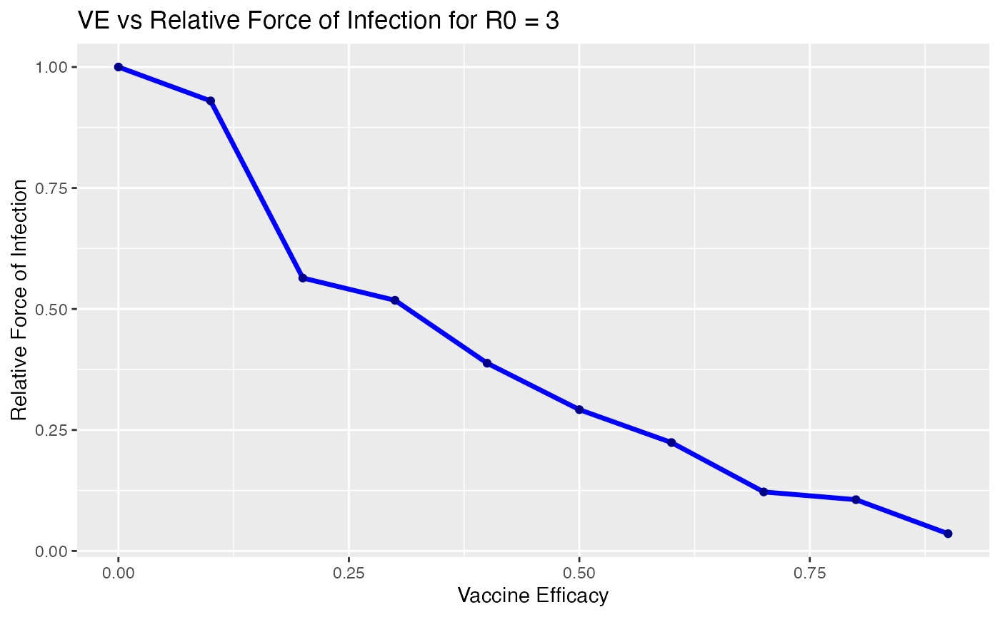
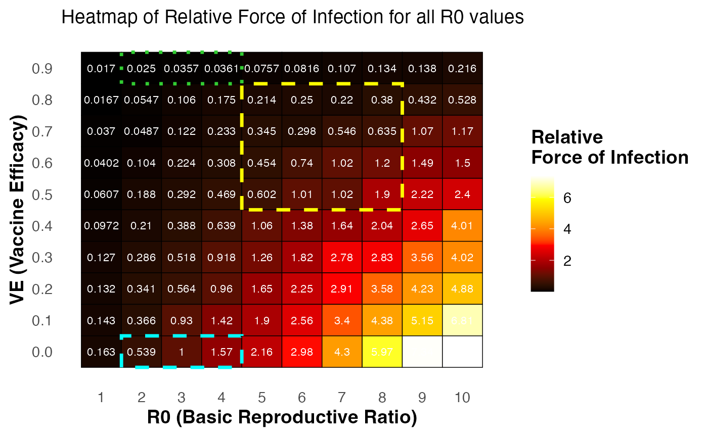

Overview
This vignette demonstrates how to use the covid19 package to explore COVID-19 quarantine breach scenarios. It covers:
Inspecting the dataset.
data("covid19")
head(covid19)
#> R0 Value VE
#> 1 1 0.0170 0.9
#> 2 1 0.0167 0.8
#> 3 1 0.0370 0.7
#> 4 1 0.0402 0.6
#> 5 1 0.0607 0.5
#> 6 1 0.0972 0.4
# summary of dataset
summary(covid19)
#> R0 Value VE
#> Min. : 1.0 Min. :0.0167 Min. :0.00
#> 1st Qu.: 3.0 1st Qu.:0.2045 1st Qu.:0.20
#> Median : 5.5 Median :0.6185 Median :0.45
#> Mean : 5.5 Mean :1.3918 Mean :0.45
#> 3rd Qu.: 8.0 3rd Qu.:1.9350 3rd Qu.:0.70
#> Max. :10.0 Max. :7.3800 Max. :0.901. Creating a line plot for a specific R0.
This line plot shows how the relative force of infection changes with VE for R0 = 3.
covid19 |>
dplyr::filter(R0 == 3) |>
ggplot(aes(x = VE, y = Value)) +
geom_line(color = "blue", size = 1.2) +
geom_point(color = "darkblue") +
labs(
title = "VE vs Relative Force of Infection for R0 = 3",
x = "Vaccine Efficacy",
y = "Relative Force of Infection"
)
#> Warning: Using `size` aesthetic for lines was deprecated in ggplot2 3.4.0.
#> ℹ Please use `linewidth` instead.
#> This warning is displayed once every 8 hours.
#> Call `lifecycle::last_lifecycle_warnings()` to see where this warning
#> was generated.
2. Launching the interactive Shiny app.
The Shiny app provides a user-friendly interface to explore the dataset interactively.
3. Heatmap of relative force of infection
The heatmap shows how the relative force of infection changes across all combinations of R0 and VE. Higher values (yellow/white) indicate higher risk of quarantine breaches leading to transmission.
library(ggplot2)
# Ensure numeric
covid19$R0 <- as.numeric(covid19$R0)
covid19$VE <- as.numeric(covid19$VE)
# Heatmap without contour
p <- ggplot(covid19, aes(x = R0, y = VE, fill = Value)) +
geom_tile(color = "black", width = 1, height = 0.1) +
geom_text(aes(label = sprintf("%.3g", Value)), color = "white", size = 3) +
scale_fill_gradientn(
colours = c("black", "darkred", "red", "orange", "yellow", "white"),
name = "Relative\nForce of Infection"
) +
theme_minimal(base_size = 14) +
theme(
panel.grid = element_blank(),
axis.title = element_text(face = "bold"),
legend.title = element_text(face = "bold")
) +
labs(
x = "R0 (Basic Reproductive Ratio)",
y = "VE (Vaccine Efficacy)",
subtitle = "Heatmap of Relative Force of Infection for all R0 values"
) +
scale_y_continuous(breaks = seq(0, 0.9, 0.1), labels = sprintf("%.1f", seq(0, 0.9, 0.1))) +
scale_x_continuous(breaks = 1:10) +
# Add highlight boxes
annotate("rect", xmin = 2 - 0.5, xmax = 4 + 0.5, ymin = 0.9 - 0.05, ymax = 0.9 + 0.05,
color = "limegreen", fill = NA, linetype = "dotted", linewidth = 1.2) +
annotate("rect", xmin = 5 - 0.5, xmax = 8 + 0.5, ymin = 0.6 - 0.15, ymax = 0.8 + 0.05,
color = "yellow", fill = NA, linetype = "dashed", linewidth = 1.2) +
annotate("rect", xmin = 2 - 0.5, xmax = 4 + 0.5, ymin = 0.0 - 0.05, ymax = 0.0 + 0.05,
color = "cyan", fill = NA, linetype = "dashed", linewidth = 1.2)
print(p)